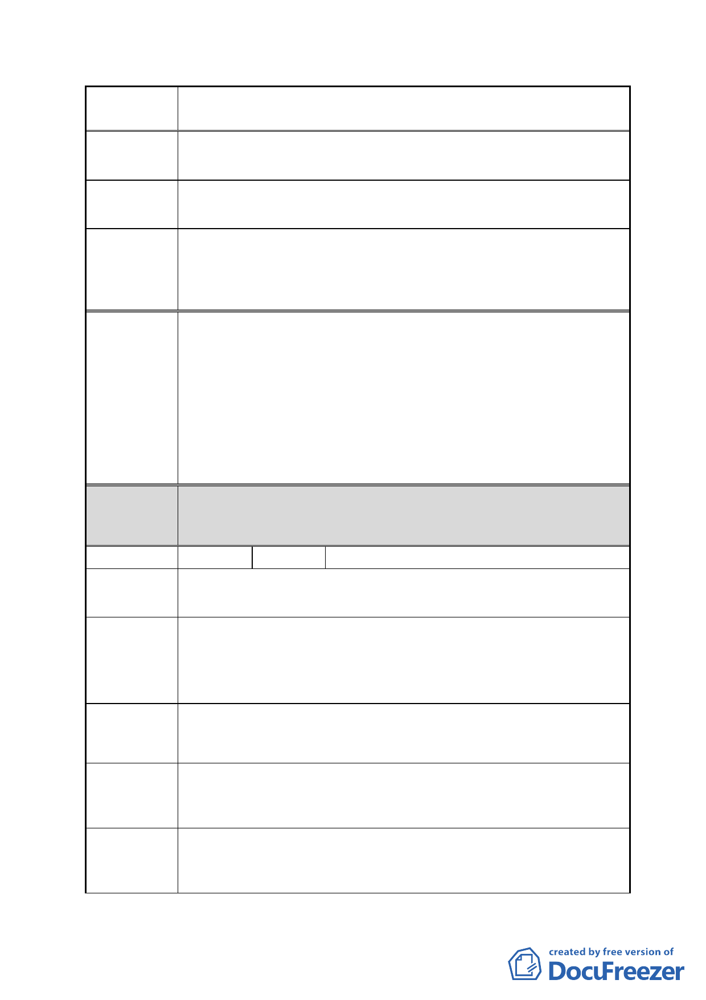

案 名 擬定臺北市南港區鐵路地下化沿線土地細部計畫案
南港區南港段二小段 577 地號
陳情地點
回饋過高且容積獎勵不切實際，對小地主毫無保障之吸引力。
陳情理由
1、建議免回饋且容積獎勵應考量小地主權益，不是只造福大
建議辦法
財團。
2、請提細部規劃內容，使百姓容易懂。
市府回應
說明
都委會
決議
1.本案陳情地點位於編號 FR-1 之私有工業區土地，經內政部
審定之主要計畫係以更新方式開發，並原則同意變更為商業
區，惟應俟實施者擬具更新事業計畫草案辦理公開展覽後，
再報由內政部逕予核定。另為促進該區未來開發，已於本案
主要計畫劃定為更新地區，故該地區可以自辦更新方式開
發，適用都市更新相關容積獎勵。
2.有關建議免除回饋及容積獎勵應考量小地主權益部分，本府
回應意見同編號 7。
1.本陳情地點非屬修正後細部計畫範圍。
2.同意以市府回應說明辦理。
編號
21 陳情人 聖嘉興企業股份有限公司
僑泰興麵粉廠
陳情地點
本案細部計畫規定特定商業區之法定建蔽率為 55％。未來建
陳情理由 1
築面積與開挖面積都將受限，使得建築量體組合配置受限，減
損塑造空間品質之彈性。而地下室開挖層數必向下發展，將增
加開發成本，浪費資源。
比照南港輪胎案將本計畫區之特定商業區（A）（B）（C）法定
建議辦法 1 建蔽率提高為 65％（最高不得超過 80％）。
本計畫區僅有三項容積獎勵：綜合設計放寬獎勵、開發規模獎
陳情理由 2 勵、立體連通設施獎勵，對於地主參與市地重劃開發之誘因似
乎稍嫌不足。
比照南港輪胎案，本計畫區增列開發時程獎勵及都市更新獎
建議辦法 2 勵，並得適用「台北市建築物增設室內公用停車空間獎勵要
點」。
- 30 -